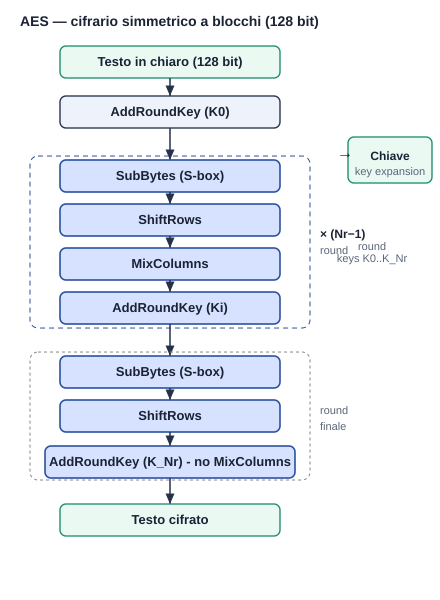
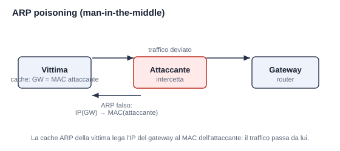

Formato reale (esami UniTo Bergadano): 5 domande = 1 a scelta multipla + 4 aperte, 45 minuti.
Le scelte multiple sono prese dagli esami reali; premi ↻ Altra per cambiarla. Le aperte hanno la soluzione modello.
1. Scelta multipla · dagli esami reali
2. Domanda aperta — Diffie-Hellman · crittografia / metodi matematici
Definire lo scambio di chiavi Diffie-Hellman (messaggi scambiati e valori calcolati) e spiegare perché è sicuro.
Mostra soluzione modello
Parametri pubblici: un primo
U1 sceglie il segreto a e invia
Chiave condivisa: U1 calcola
Sicurezza: sul canale viaggiano solo g, p, A, B; per ricavare a (o b) servirebbe il logaritmo discreto, computazionalmente difficile per p grande. (Vulnerabile però al man-in-the-middle senza autenticazione.)
p e un generatore g.U1 sceglie il segreto a e invia
A = g^a mod p. U2 sceglie il segreto b e invia B = g^b mod p.Chiave condivisa: U1 calcola
B^a mod p, U2 calcola A^b mod p → entrambi ottengono S = g^(ab) mod p.Sicurezza: sul canale viaggiano solo g, p, A, B; per ricavare a (o b) servirebbe il logaritmo discreto, computazionalmente difficile per p grande. (Vulnerabile però al man-in-the-middle senza autenticazione.)
3. Domanda aperta — AES · con schema grafico
Descrivere il cifrario AES utilizzando uno schema grafico (struttura, round e operazioni).
Mostra soluzione modello + schema
AES è un cifrario simmetrico a blocchi (blocchi 128 bit; chiavi 128/192/256). Una AddRoundKey iniziale, poi
Nr−1 round con SubBytes (S-box, sostituzione non lineare → confusione), ShiftRows e MixColumns
(→ diffusione), AddRoundKey; il round finale omette MixColumns. Le chiavi di round derivano dalla key expansion.

4. Domanda aperta — Software security · buffer overflow (in profondità)
Con riferimento a semplici attacchi di buffer overflow su stack, spiegare: (a) perché può essere utile riempire una parte dello stack con byte 0x90 (“nop”); (b) perché può essere utile riempirla con l'indirizzo di ritorno desiderato (“spraying”).
Mostra soluzione modello
(a) NOP sled: una sequenza di istruzioni NOP (0x90) prima dello shellcode. L'indirizzo esatto dello shellcode è spesso
incerto (lo stack può variare): se l'indirizzo di ritorno “atterra” in un punto qualsiasi dello sled, le NOP non fanno nulla e
l'esecuzione scivola fino allo shellcode. Aumenta la probabilità di colpire.
(b) Spraying dell'indirizzo di ritorno: si riempie una larga porzione di stack con molte copie dell'indirizzo di ritorno desiderato, così che — qualunque sia l'allineamento o la posizione esatta della parola di ritorno — la CPU ne prelevi una e salti dove vuole l'attaccante. Spesso si combinano: si spruzza un indirizzo che punta dentro il NOP sled.
Difese: ASLR (indirizzi casuali), stack canary, NX (stack non eseguibile).
(b) Spraying dell'indirizzo di ritorno: si riempie una larga porzione di stack con molte copie dell'indirizzo di ritorno desiderato, così che — qualunque sia l'allineamento o la posizione esatta della parola di ritorno — la CPU ne prelevi una e salti dove vuole l'attaccante. Spesso si combinano: si spruzza un indirizzo che punta dentro il NOP sled.
Difese: ASLR (indirizzi casuali), stack canary, NX (stack non eseguibile).
5. Domanda aperta — Sicurezza di rete · con schema grafico
Utilizzando uno schema grafico, illustrare il funzionamento dell'attacco noto come ARP poisoning.
Mostra soluzione modello + schema
L'attaccante invia risposte ARP falsificate che associano il proprio MAC all'IP del gateway (e/o della vittima).
La cache ARP della vittima viene “avvelenata”: il traffico destinato al gateway viene inviato al MAC dell'attaccante, che si
pone come man-in-the-middle (legge/modifica e inoltra). Consente lo sniffing anche su LAN switchata.

Altre aperte reali da allenare (flashcard): MAC, esempio di DoS, perché MD5 non si usa più nelle firme, ACL di un packet filter, VPN, firewall HA.